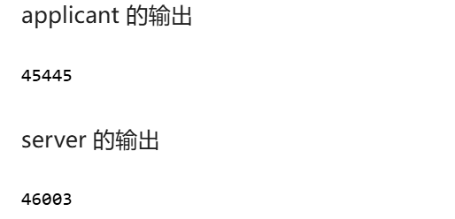
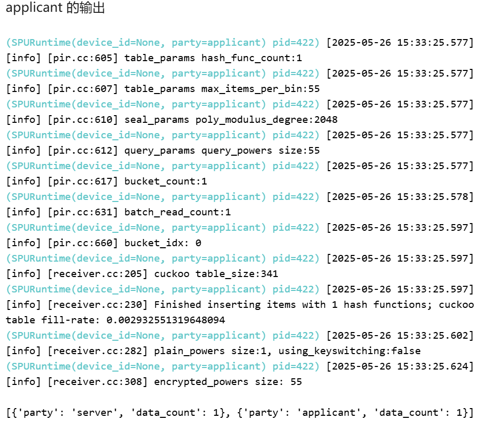
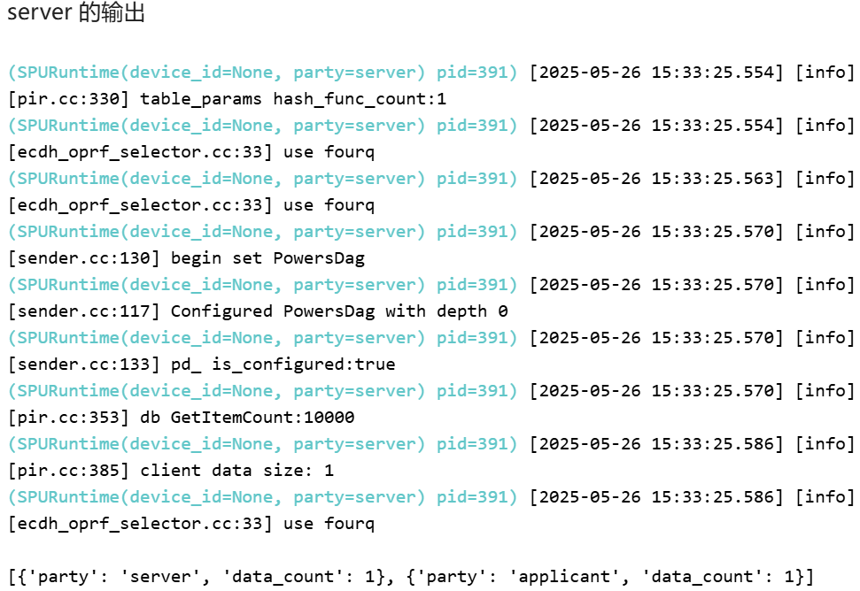

实验三：专利域名申请（PIR应用）¶
一、实验背景¶
1.1 实验背景¶
在创新驱动的时代，知识产权（如专利、域名）的保护至关重要。在申请新的专利或域名时，申请方（applicant）通常需要先查询相关的数据库，以确认其创意或名称是否已被注册。然而，这个查询过程本身就存在风险：如果服务提供方（server，即数据库持有者）得知了申请方的查询内容，可能会利用信息优势，抢先注册该专利或域名，从而损害申请方的利益。
为了解决这一“查询隐私泄露”问题，隐私信息检索（PIR - Private Information Retrieval）技术应运而生。PIR 允许用户从服务器数据库中检索一条信息，而服务器无法得知用户具体检索的是哪一条。
本案例模拟了专利申请方（applicant）向服务提供方（server）查询专利信息的场景，旨在利用隐语 SecretNote 平台及其 PIR 功能，实现安全的专利信息查询，确保查询请求的保密性。
1.2 技术介绍¶
本次实验的核心技术是隐私信息检索（PIR - Private Information Retrieval） 。
- 概念: PIR 是一种密码学协议，允许用户（客户端）从持有数据库的服务器那里检索数据库中的某一项记录，而服务器无法得知用户具体检索的是哪一项。这解决了 "1-out-of-N" 的隐私检索问题。
-
原理: PIR 的实现方式多种多样，主要分为两大类：
-
信息论 PIR (Information-Theoretic PIR) : 这类协议通常需要多个互不串通的服务器，即使服务器拥有无限计算能力也无法破解查询隐私。但它对服务器设置有较高要求。
-
计算 PIR (Computational PIR) : 这类协议通常只需要一个服务器，其安全性基于某个计算难题（如大数分解、离散对数等）。它们通常利用同态加密 (HE) 或不经意传输 (OT) 等技术。隐语中的 PIR 实现很可能属于此类，其基本思路可能如下：
- 查询生成: 客户端将其想查询的记录索引
i 编码成一个加密的向量或多项式。这个加密查询的特点是，它看起来像是对所有记录都可能感兴趣。 - 服务器处理: 服务器接收到加密查询后，利用同态加密的性质（或 OT 协议），用这个加密查询去“乘以”或“作用于”整个数据库。结果是一个加密的聚合值。
- 结果返回: 服务器将这个加密的聚合值返回给客户端。这个返回值通常很大，可能与数据库大小相当。
- 结果解密: 客户端利用自己的私钥解密这个聚合值，最终得到自己想要的第
i 条记录。 这种方式下，服务器只看到加密的查询和加密的返回，无法定位到具体查询项。
- 查询生成: 客户端将其想查询的记录索引
二、实验目标¶
本次实验的主要目标是：
- 掌握 SecretNote 环境配置: 学会在 SecretNote 平台上配置涉及专利申请方和服务提供方两个参与方的隐私计算环境。
- 理解并应用 PIR 技术: 学习隐私信息检索（PIR）的基本概念和原理，并掌握如何使用隐语 SPU 来执行 PIR 查询任务。
- 实现安全信息检索: 利用服务方提供的数据库（
pir_server_setup）和申请方的查询请求（pir_query.csv），执行 PIR 操作，获取查询结果。 - 验证查询隐私性: 确保在查询过程中，服务方（
server）无法获知申请方（applicant）具体查询了哪些专利信息。 - 获取并输出查询结果: 将查询到的结果安全地返回给申请方，并输出到指定文件（
pir_result.csv）。
三、实验步骤¶
本实验在隐语 SecretNote 平台进行，涉及 applicant 和 server 两个参与方。
1. 实验配置¶
配置步骤与前述实验类似，包括获取端口、配置 Ray-Fed 和配置 SPU。
1.1 添加节点与获取端口¶
- 操作: 在 SecretNote 平台添加
applicant 和server 节点，并获取 IP 地址。 - 运行: 分别为
applicant 和server 运行以下代码块，获取未使用的端口号，并记录下来。
import socket
from contextlib import closing
from typing import cast
def unused_tcp_port() -> int:
"""返回一个未使用的端口"""
with closing(socket.socket(socket.AF_INET, socket.SOCK_STREAM)) as sock:
sock.bind(("", 0))
sock.setsockopt(socket.SOL_SOCKET, socket.SO_REUSEADDR, 1)
return cast(int, sock.getsockname()[1])
print(unused_tcp_port())

1.2 配置并初始化 Ray-Fed¶
- 操作: 使用获取到的 IP 地址和端口号，配置
cluster_config。 -
运行: 分别为
applicant 和server 运行对应的代码块。重要: 两个代码块需要同时选中两个参与方一起执行。 -
Applicant 端:Python
- Server 端:import secretflow as sf cluster_config = { "parties": { "applicant": { # 替换为 applicant 的实际 IP 和端口 "address": "172.16.0.42:46047", "listen_addr": "0.0.0.0:46047" }, "server": { # 替换为 server 的实际 IP 和端口 "address": "172.16.0.54:58207", "listen_addr": "0.0.0.0:58207" }, }, 'self_party': 'applicant' } sf.init(address="127.0.0.1:6379", cluster_config=cluster_config)import secretflow as sf cluster_config = { "parties": { "applicant": { # 替换为 applicant 的实际 IP 和端口 "address": "172.16.0.42:46047", "listen_addr": "0.0.0.0:46047" }, "server": { # 替换为 server 的实际 IP 和端口 "address": "172.16.0.54:58207", "listen_addr": "0.0.0.0:58207" }, }, 'self_party': 'server' } sf.init(address="127.0.0.1:6379", cluster_config=cluster_config)
1.3 配置并初始化 SPU¶
- 操作: 再次运行
unused_tcp_port 获取新的端口号，用于 SPU 配置。 -
运行:
-
获取 SPU 端口（双方运行）：
 2. 配置并创建 SPU 实例（同时选中两个参与方运行）：
import spu spu_conf = { "nodes": [ { "party": "applicant", # 替换为 applicant 的实际 IP 和 SPU 端口 "address": "172.16.0.42:45445" }, { "party": "server", # 替换为 server 的实际 IP 和 SPU 端口 "address": "172.16.0.54:46003" }, ], "runtime_config": { "protocol": spu.spu_pb2.SEMI2K, "field": spu.spu_pb2.FM128, "sigmoid_mode": spu.spu_pb2.RuntimeConfig.SIGMOID_REAL, }, } spu_device = sf.SPU( cluster_def=spu_conf, link_desc={ "connect_retry_times": 60, "connect_retry_interval_ms": 1000 }, )
2. PIR 任务执行¶
PIR 任务需要服务方进行一些准备工作，然后双方共同执行查询。
2.1 获取当前目录¶
- 操作: 获取当前工作目录，为后续文件操作做准备。
- 运行: 同时选中两个参与方运行。
2.2 服务方准备 (Server-Side Setup)¶
- 操作: 服务方需要解压数据库文件
pir_server_setup.tar，并将私钥文件server_secret_key.bin 移动到指定的/tmp 目录。这是 PIR 协议服务方运行所必需的步骤。 - 运行: 只选中
server 参与方运行以下两个代码块。
2.3 执行 PIR 查询¶
- 操作: 申请方
applicant 作为客户端，服务方server 作为服务端，共同执行spu.pir_query 函数。 -
说明:
-
server: 指定服务方名称。 -
client: 指定客户端名称。 -
server_setup_path: 指定服务方解压后的数据库路径。 -
client_key_columns: 指定客户端查询文件中用作查询键的列名 (uid)。 -
client_input_path: 指定客户端的查询文件 (pir_query.csv)。 -
client_output_path: 指定客户端接收结果的输出文件 (pir_result.csv)。 - 隐语的 PIR 实现会处理客户端查询的加密、发送、服务端处理以及结果的加密返回和客户端解密，整个过程服务方不知道客户端具体查询了哪条记录。
- 运行: 同时选中两个参与方运行。
# 确保 SPU 实例已创建并命名为 spu_device 或 spu
# spu_device.pir_query( # 或 spu.pir_query(...)
spu.pir_query(
server='server',
client='applicant',
server_setup_path=f'{current_dir}/pir_server_setup',
client_key_columns="uid",
client_input_path=f"{current_dir}/pir_query.csv",
client_output_path=f"{current_dir}/pir_result.csv"
)


四、实验结果与分析¶
1. 实验输出¶
- PIR 查询输出:
这个输出表明，服务方处理了查询并返回了数据（data_count: 1 表示处理了一个查询批次或找到了匹配），申请方也接收到了相应数量的数据（data_count: 1）。这表明 pir_query.csv 中的查询键在服务器数据库中找到了 1 条匹配记录。查询到的具体内容已经被写入了 applicant 方的 pir_result.csv 文件中。
2. 结果分析¶
- 正确性: 实验成功执行了 PIR 查询，并报告找到了 1 条匹配记录。这表明查询流程是通的，并且
pir_query.csv 中的uid 在服务器的数据中存在。申请方可以在pir_result.csv 中查看具体的查询结果（虽然本 notebook 没有展示文件内容，但流程成功即表示结果已生成）。 - 隐私保护: 实验的核心价值在于其隐私保护特性。在
spu.pir_query 执行过程中，applicant 的查询请求（pir_query.csv 中的uid）经过了加密或盲化处理后才发送给server。server 在处理这个加密请求时，无法知道原始的uid 是什么，它只是根据协议执行计算，并将（可能是加密或混淆后的）大量数据返回给applicant。只有applicant 才能利用自己的密钥从中解密出自己想要的那一条记录。因此，查询隐私得到了有效保障。 -
性能: PIR 通常比 PSI 或明文查询有更大的性能开销，尤其是计算型 PIR（往往基于同态加密）。这主要是因为：
-
客户端需要生成和发送复杂的加密查询。
- 服务端需要对整个（或大部分）数据库进行计算，以响应一个加密查询。
- 服务端需要返回的数据量通常远大于实际查询结果的大小，以混淆真实查询目标。 本实验中，虽然查询的数据量不大，但仍能观察到 PIR 过程需要一定时间。对于大规模数据库，PIR 的性能（计算和通信）是需要重点考虑和优化的方面。